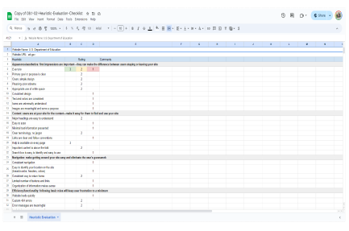
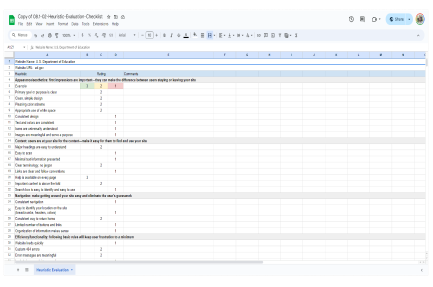

Introducing Ed.gov!

“ED's mission is to promote student achievement and preparation for global competitiveness by fostering educational excellence and ensuring equal access.
- Establishing policies on federal financial aid for education, and distributing as well as monitoring those funds.
- Collecting data on America's schools and disseminating research.
- Focusing national attention on key educational issues.
- Prohibiting discrimination and ensuring equal access to education.”
What does all of that mean? it's supposed to be an information hub for various people of many backgrounds.
 
